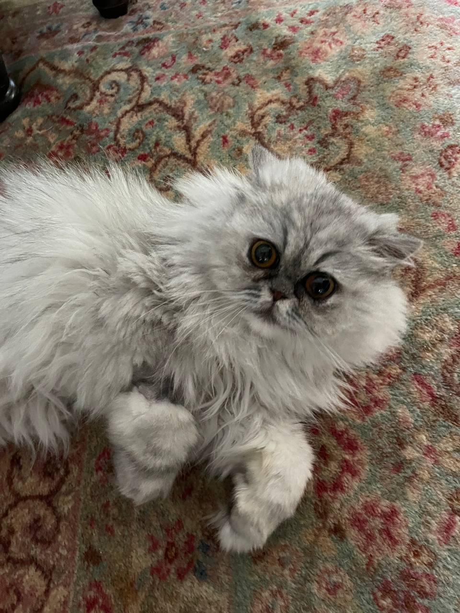
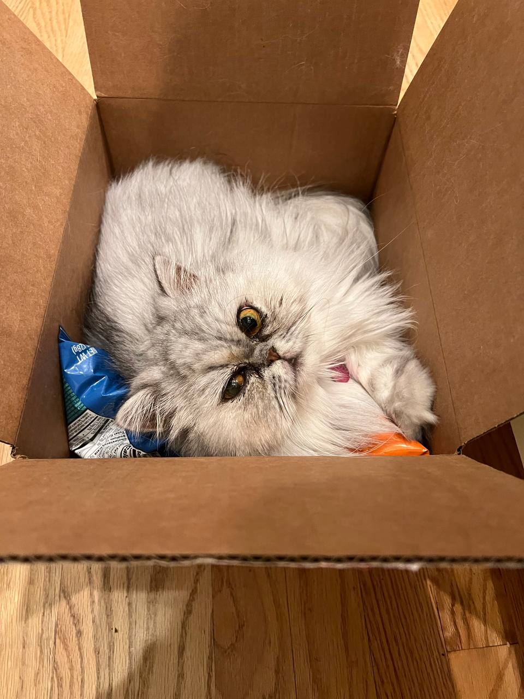
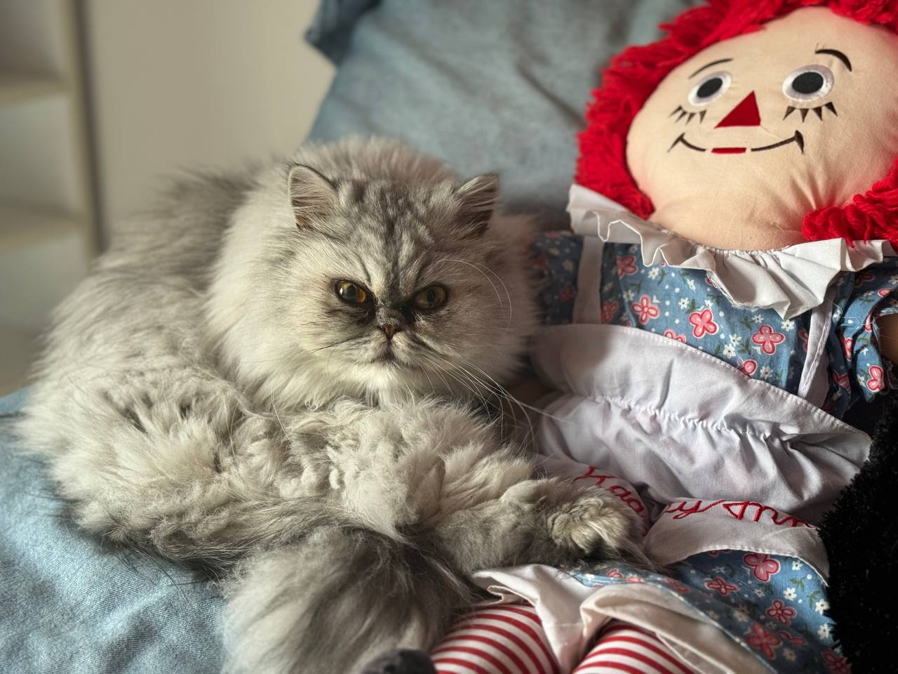

About Quacky Cat
Quacky Cat is a fun and adventurous character who loves to play and explore. Join Quacky Cat on exciting adventures and see the world through playful eyes.
How to Buy
1. Create a Wallet
Download Phantom or your wallet of choice from the app store or Google Play store for free. Desktop users can download the Google Chrome extension by going to the Phantom app.
2. Get Some SOL
Have SOL in your wallet to switch to $quacky. If you don't have any SOL, you can buy SOL from an exchange or cross chain swap and send it to your wallet.
3. Go to Raydium
Connect to Raydium. Go to raydium.io in Google Chrome or on the browser inside your Phantom app. Connect your wallet. Paste the $quacky token address into Raydium and confirm the swap. When Phantom prompts you for a wallet signature, sign it.
4. Swap
Switch SOL for $quacky.